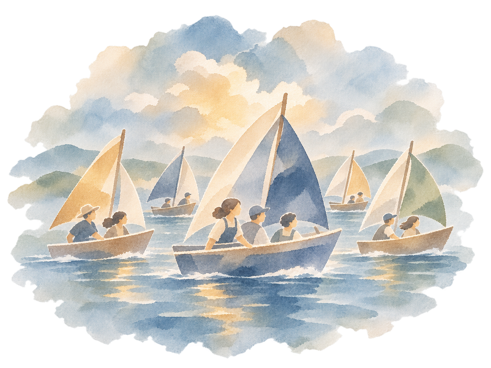
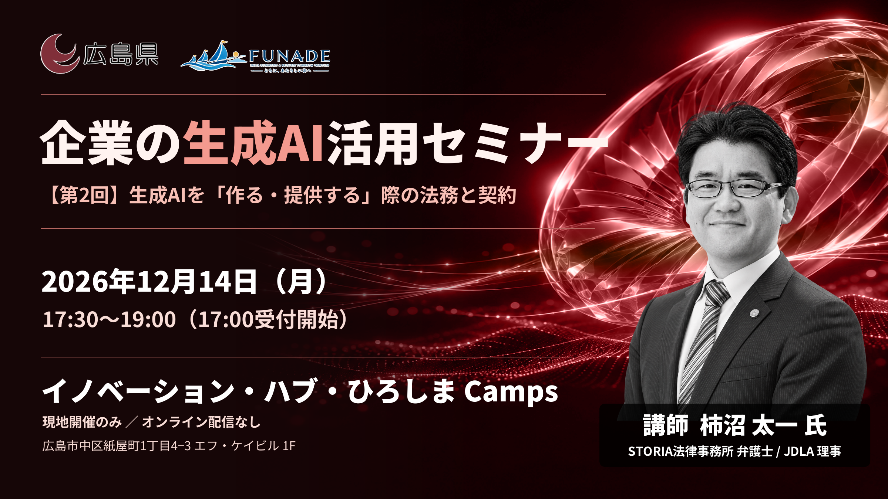
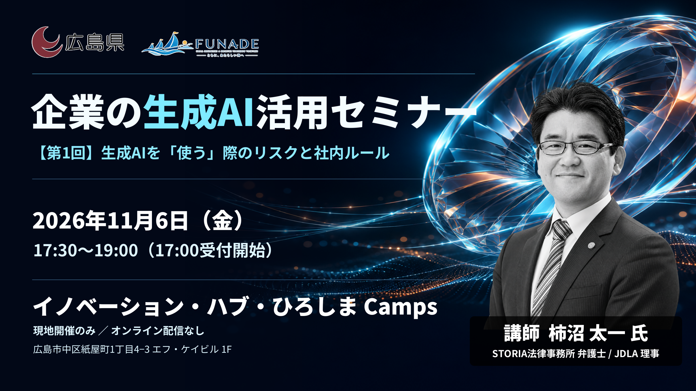
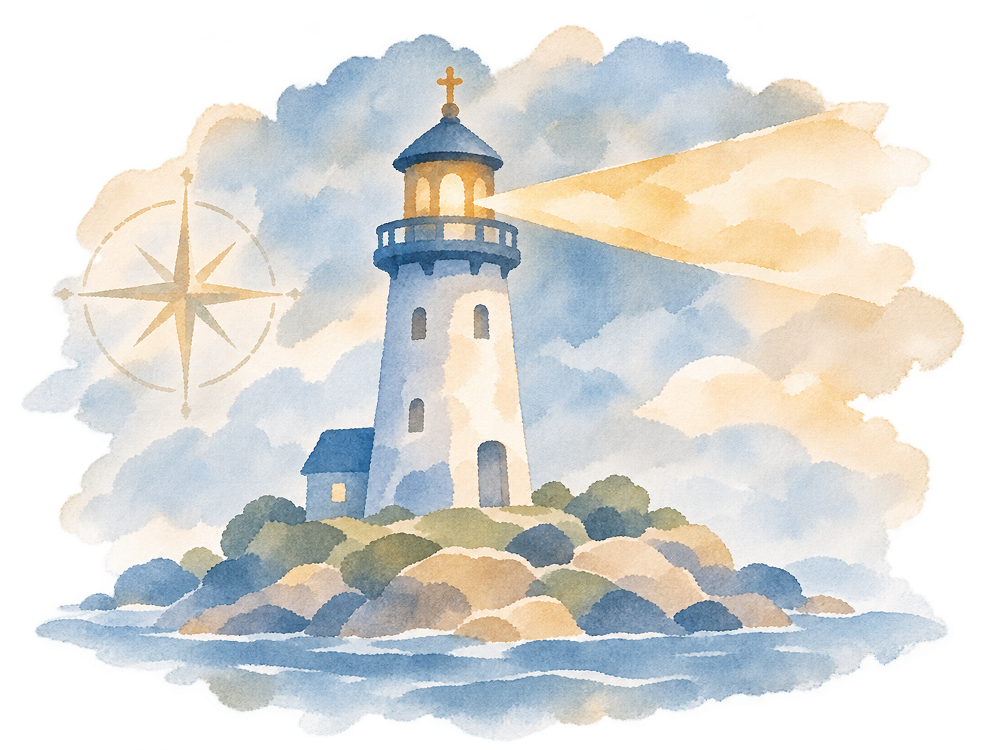
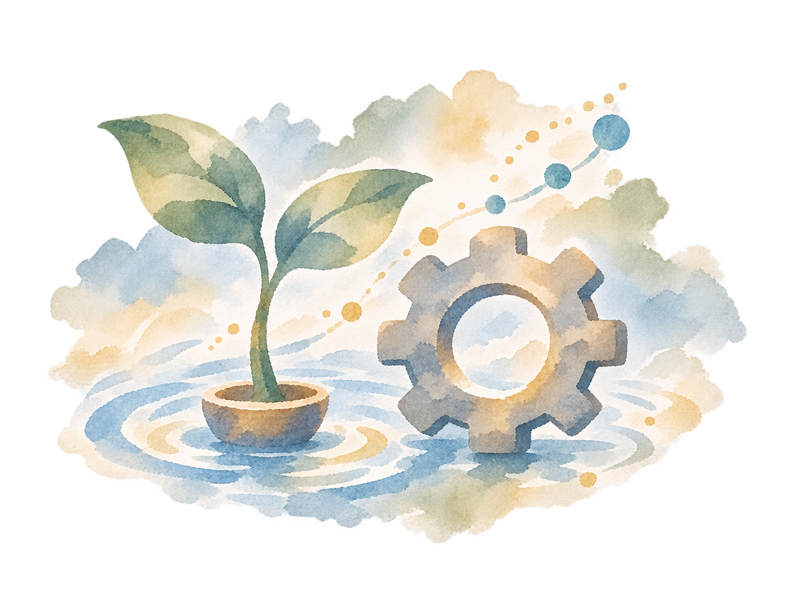
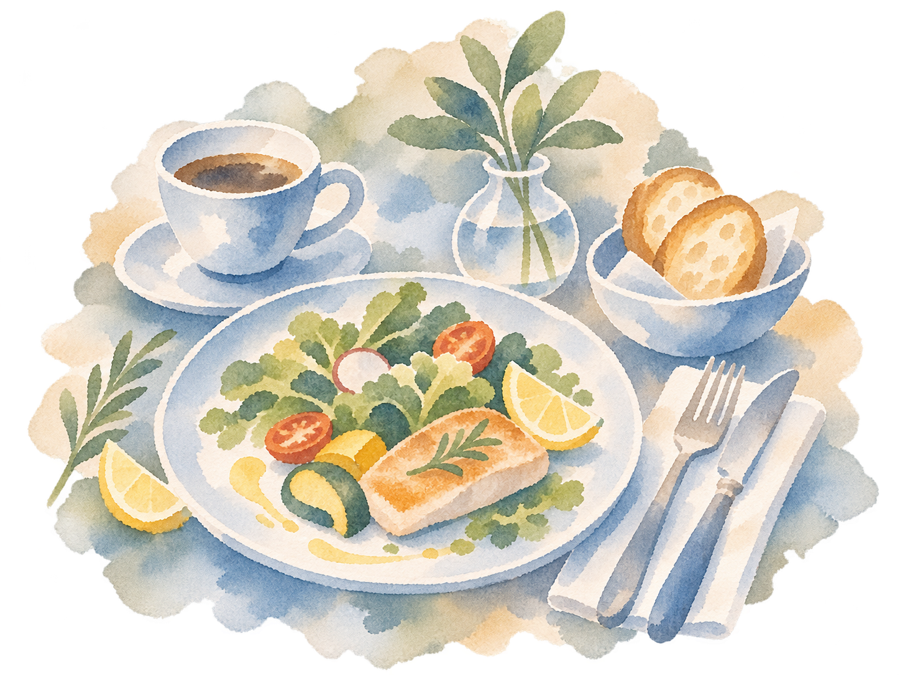
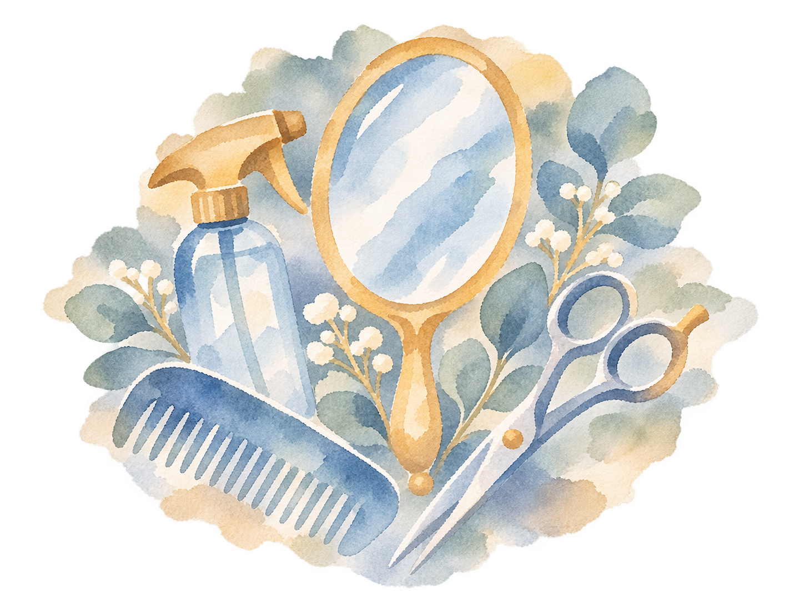
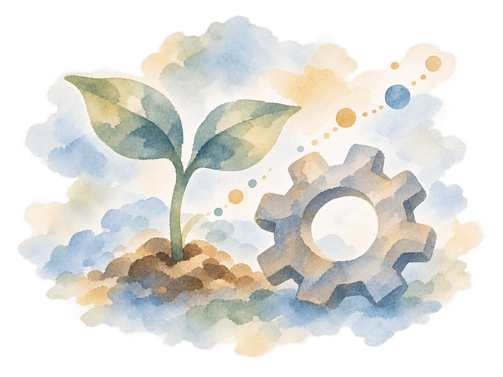
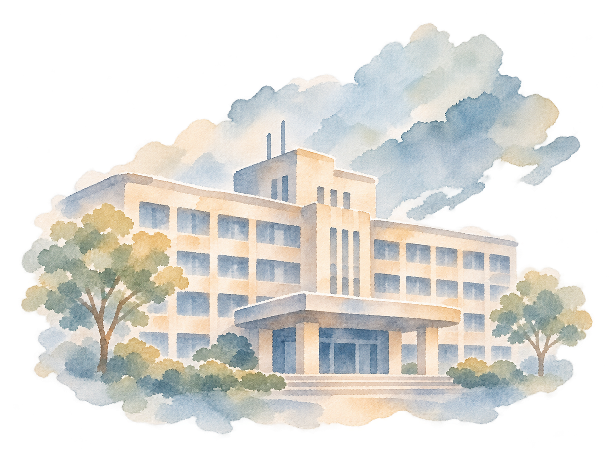

小さな船も、船団になれば、越えられる波がある。
ひろしま協働DXプロジェクト
同じ悩みを持つ事業者が集まり、日々の業務における困りごとを可視化。AI等のデジタル技術を使って、小さく試す。「FUNADE」は広島県が主催する、小規模事業者等のための協働型DX実証プロジェクトです。
FUNADEについて
「1社で頑張るDX」ではなく、仲間と一緒に取り組む協働型のDXです。
同業種・共通課題を持つ職種でチームを組み、各社の課題を持ち寄って、小さな範囲からDXに取り組みます。
成功事例と失敗要因をチーム内で共有し、その知見を他の事業者や地域全体へ広げます。
FUNADEの考え方
-
まず
可視化する
日常業務に潜む効率化可能な課題を洗い出し、各作業の所要時間を把握。
その上で、業務改善による負担軽減効果を可視化します。 -
つぎに
小さく試す
大規模な投資やDXから着手するのではなく、単一業務・短期間のスモールスタートで実証を始めます。
手法が合わない、または効果が見られない場合は、柔軟に方法を再度検討します。 -
そのあと
地域に広げる

各テーマの実証結果を事例・テンプレートとして整理・共有し、同様の課題を抱える事業者がゼロから検討せずに済む環境をつくることで、広島県全体のDXを加速させます。
学び、出会い、ともに進む
セミナー・イベント
小規模事業者の皆様に向けた、AI活用やDXに関するセミナー・研修・ワークショップをご案内しています。
本事業の参加者に限らず、どなたでもご参加いただけますので、お申し込みは各イベントの申込フォームよりお願いいたします。

企業の生成AI活用セミナー
生成AIを「作る・提供する」際の法務と契約
AI・データ法務の第一人者である柿沼太一弁護士（STORIA法律事務所/JDLA理事）を講師に迎え、生成AI活用の第2段階である「作る・提供する」に焦点を当て、社内・顧客向けプロダクトの開発・提供と、外注時の契約交渉について講義いただきます。

企業の生成AI活用セミナー
生成AIを「使う」際のリスクと社内ルール
AI・データ法務の第一人者である柿沼太一弁護士（STORIA法律事務所/JDLA理事）を講師に迎え、生成AI活用の第1段階である「使う」に焦点を当て、生成AIを自社に導入、活用する際のリスクと社内ルール整備について講義いただきます。
こんな困りごとはありませんか？
DXやAI活用の重要性は理解しているけど、着手できていない
以下の6項目は、DX・AI活用に着手できていない事業者の皆様が抱える、代表的な課題として本事業が想定しているものです。
ひとつでも当てはまる項目があれば、ぜひ続きをご覧ください。
-
1
予約・問い合わせ対応の分散
電話・紙・複数サイトに予約や問い合わせ情報が分散し、一元管理できていない
-
2
紙・Excelによる属人的な管理
顧客情報や台帳を紙・Excelで管理しており、担当者以外は内容を把握できず、引き継ぎに不安がある。
-
3
発注・在庫管理の属人化
発注や仕入れの判断が店長の勘と経験に依存しており、データとして蓄積されていない。
-
4
日報・現場記録の形骸化
日報や現場記録の作成が担当者任せになっており、繁忙時には後回しとなるため、正確な記録が残らない。
-
5
熟練者のノウハウ継承
ベテランの技術や判断基準が言語化されておらず、若手やパート・アルバイトへの継承が難しい。
-
6
着手点が分からない
AIやDXに関心はあるものの、何から取り組むべきか分からない。
参加すると得られること
参加事業者にとってのメリット
本事業は、新たなツールを導入して終わるものではありません。
事業終了時には、次に取り組むべきことの道筋と、同じ課題を持つ事業者とのつながりが手元に残ります。
-
1
何から始めるかが決まる
漠然とした困りごとに優先順位がつき、次の一手が見える。
-
2
他社の工夫を知れる
同じ悩みを持つ事業者の工夫や進め方を学べる。
-
3
一人で抱えずに進められる

一人だと後回しになる作業も、集まる場があると進む。
-
4
大きな投資の前に確かめられる

いきなり本格導入せず、小さく試してから判断できる。
-
5
県内の取組事例として発信される
成果や工夫が地域に共有され、次の挑戦につながる。
支援内容・対象
令和8年度は3つの業種・業務テーマで課題解決に取り組みます
本年度は「飲食」「理美容」「バックオフィス」の3テーマで取り組みます。
テーマごとにチームを組成し、各業種に共通する課題から着手します。
-
飲食

こんな悩み
予約や注文情報が電話・紙・複数サイトに分散し、仕入れや仕込みの量は経験と勘に頼りがち。
取り組むこと
売上と注文の数字を1か所に集めて、仕入れの量を勘ではなく記録から決められる状態をつくります。
-
理美容

こんな悩み
施術履歴や薬剤配合、顧客情報が紙のカルテと担当者の記憶に依存し、再来店の状況も見えづらい。
取り組むこと
紙のカルテをデジタルに移し、担当者が変わっても同じ情報にたどり着ける状態をつくります。
-
バックオフィス
こんな悩み
見積・請求・議事録作成などの定型業務が特定の担当者の手作業に依存し、AI活用も個人任せ。
取り組むこと
見積や議事録づくりをAIに任せる手順をつくり、個人の工夫で終わらせずに会社の型にします。
※ 上記は現時点で想定している取組内容です。実際の課題・進め方は、参加事業者どうしのワークショップを経て決定します。対象業種が迷う場合は、お気軽にお問い合わせください。
支援対象・参加条件
支援の対象となる事業者
こんな方におすすめです
- 広島県内で飲食・理美容・バックオフィス関連の業務を行っている（目安：従業員20人以下の小規模事業者等）
- 経営者ご自身が現場の業務も担っている
- ITやデジタルは得意ではないが、まずは「学ぶ」ことから始めたい
- 同じ悩みを持つ他の事業者と一緒に取り組んでみたい
参加費・利用料
事業の参加費は無料です。ただし、生成AI（Claude・ChatGPT等）の有料プラン（月3,000円程度）の利用料のみ、各社でご負担いただきます。
※ 従業員20人以下（経営者を含む）を目安としています。複数店舗をお持ちの場合など、判断に迷われる際はお気軽にお問い合わせください。
進め方
専門知識がなくても、無理なく進められます
基礎を学び、専門家とともに課題に合ったツールを検証し、実際の業務へ。学びから実装まで、段階的に進めながら専門家が伴走します。
-
1
学ぶ
DXの意義やAIの基礎を、セミナー・研修で学びます。
-
2
検証する
専門家と課題を整理し、ツールを作成・試用します。
-
3
実装する

ツールを業務に取り入れ、データを分析・改善に活かします。
伴走する支援体制
参加事業者と、それを支える仲間たち
参加事業者を中心に、同じ悩みを持つ仲間・支援機関・専門家・広島県が周りを支える体制です。
参加事業者
あなたの会社・お店から、
広島の未来をつくる
-
同じ悩みを持つ仲間
同一テーマの参加事業者
-
学生・若手人材
開発・改善の担い手
-
支援機関・業界団体
募集・フォローアップ
-

広島県
事業の運営・広報
-
IT・DX専門家
伴走支援・技術指導
ともに、あたらしい海へ
スケジュール
実施スケジュール（予定）
2026年11月13日更新
募集から成果発表会まで、およそ半年を見込んでいます。
-
1 2026年10月13日〜
31日 募集中参加事業者募集
支援機関・本ウェブサイト・SNS等を通じて参加事業者を募集
-
2 2026年11月4日
（水） 応募結果の通知
-
3 2026年11月30日〜
12月7日 次の予定テーマ別ワークショップ
取組内容の説明、AI・DXツールの体験
- 飲食事業者：14:00〜17:00
- 理美容事業者：14:00〜17:00
- バックオフィス：16:00〜19:00
-
4 2026年12月〜2027年1月頃
検証（小さく試す）
AI・デジタルツールを使って、低コスト・短期間で試行
-
5 2027年1月〜2月頃
実装・効果測定
一部の事業者で本格的に運用し、効果を数値で確認
-
6 2027年3月頃
成果発表会
取組の成果を事例として地域に発信
※ テーマ別ワークショップの日程は上記のとおりです。その他の工程は予定のため、今後の調整により前後する可能性があります。詳細は個別にご案内します。
よくあるご質問
はじめる前の不安に、先にお答えします
「うちにできるだろうか」と迷われる方が多いご質問をまとめました。ここに無いことも、遠慮なくお尋ねください。
ITやデジタルが苦手でも参加できますか？
はい。学ぶ、検証する、実装する、の順に段階を踏みます。出発点はセミナー・研修での基礎知識なので、何も知らない状態からで問題ありません。分からないところで止まってしまったときは、その場で聞いてください。
費用はどのくらいかかりますか？
本プロジェクトへの参加費は無料です。ただし、生成AI（Claude・ChatGPT等）の有料プラン（月3,000円程度）のみ、各社でご負担いただきます。あらかじめご了承ください。
事業に参加していなくても、セミナーに参加できますか？
はい。事業関連セミナーは、事業への参加有無にかかわらずどなたでもご参加いただけます。各セミナーの参加申込みフォームからお申し込みください。
どのくらいの期間、どのくらい関わることになりますか？
2026年10月の募集開始から2027年3月頃の成果発表会まで、およそ半年間を想定しています。セミナー・研修、ワークショップ、実証といった節目ごとにご参加いただく形で、日々の業務を止めていただくものではありません。
募集テーマ以外の業種でも相談できますか？
今年度は飲食・理美容・バックオフィスの3テーマで募集しており、その他の業種は対象外です。ただし業務の一部がバックオフィス寄りであるなど、線引きに迷う場合はお問い合わせください。対象になるかどうかを一緒に確認します。
途中参加はできますか？
途中参加（本年度該当テーマの事業者様のみ）をご希望の方は、事務局へご相談ください。
※ 「想定」と記した内容は現時点の見込みです。ここにないご質問は、下のお問い合わせ先へご連絡ください。
事業・セミナーに関するご相談
お問い合わせ
事業内容やセミナーについて、ご不明な点は事務局へお問い合わせください。
お問い合わせ先
広島県商工労働局 経営革新課
「令和8年度広島県DX協働モデル事例創出プロジェクト」事務局
業務委託先：株式会社エル・ティー・エス（担当：丸尾）
件名の例：FUNADE 途中参加の相談